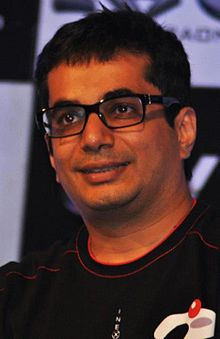

Vishal Gondal (born 14 July 1976) is an Indian entrepreneur and angel
investor. He is the founder and CEO of GOQii (pronounced Go-Key), and previously
founded the game development and publishing company Indiagames, which he sold to
DisneyUTV Digital, The Walt Disney Company (India) in 2011 for $100
millionndiagames
In 1999, Gondal founded Indiagames, a video game development and publishing
company.By 2009 the company had approximately 300 employees and offices in
Mumbai, Beijing, London and Los Angeles. Gondal sold a majority of stakeholds
(adding up to 76.29% of the company) to TOM online Games, a subsidiary of TOM
Online Inc, in 2009 and retained his position as CEO.
In 2011, Indiagames was
acquired by Disney for around $100m.At the time of acquisition, Indiagames was
making an approximate profit of $400,000 on revenues of $11 million.
In 2008, Gondal launched Sweat and Blood Venture group to invest in startups at
a seed level. The organization has invested in Instablogs and Docsuggest, among
others.
In August 2012, The Walt Disney Company India Pvt. Ltd. restructured its digital
assets under a new division, DisneyUTV Digital, with Vishal Gondal as its
managing director.
In March 2014, Gondal launched GOQii, a fitness technology company based in
Menlo Park, California.
Gondal has presented at the INK Conferences in Mumbai.
In 2005 Mobile Entertainment magazine listed Gondal as listed as one of the top
50 executives in the mobile content space.
In 2005 Indiagames was listed by Red Herring among Asia's Top 100 companies.
In 2012 techcircle.in included Gondal in a list of the top 25 powerful people in
Indian digital business.